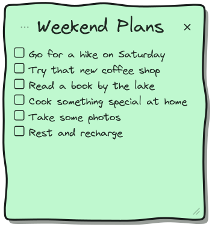
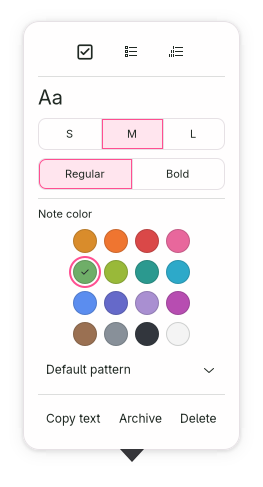

Latest requested filter-band and first-row spacing correction. Earlier sidebar review captures remain below.
Latest requested consistency and canvas-pattern correction.
Playful sidebar polish
Playful is approved. Minimal Light is authorized next; Minimal Dark has not started. No commit or push.
The sidebar edge now continues through the filter row. Rounded selection and hover fills sit inside the row, with a 5px gap before a separate straight divider. Dates and truncation remain visible. Verification record · Previous review gallery.
Reference and fresh GTK preview
 Original Playful reference
Original Playful reference Corrected GTK preview, 720×540
Corrected GTK preview, 720×540Previous and corrected sidebar
Selected hover and long titles
Individual notes and open tools

Weekend Plans, 352×376 Weekend Plans, 300×280
Weekend Plans, 300×280 Open individual tools, 180×412
Open individual tools, 180×412
All Notes More, 263×487Real GTK captures. Opening tools preserves the note's 352×376 default and 300×280 minimum dimensions.
Typography remains unchanged
| Text | Small | Medium | Large |
|---|
| Title | 27px | 30px | 33px |
| Body | 14px | 17px | 20px |
Virgil by default; Inter and JetBrains Mono stay global choices. Regular is 400 and Bold is 700. Chrome stays Inter, with 14px sidebar titles, 11px snippets and 10px dates.
The earlier reference differences remain: Virgil handwriting differs from the mock, compact body text leaves more space, and minimum-size long text scrolls. No automatic underline or decorative note-face pin badge was added.
Other-theme regression captures
Only Playful CSS changed. These are checks of existing appearances, not work on either Minimal theme.
Paper: All Notes · Individual note · Tools
Minimal Light: All Notes · Individual note · Tools
Minimal Dark: All Notes · Individual note · Tools
Verification
Formatting, 22 non-display tests, strict Clippy, release build and diff checks passed. Disposable GTK checks passed for shared typography/weight, all sixteen colors with persistence, all three global fonts, exact dimensions and tools preserving note size. Selected-hover rendering was checked with GTK's hover state. Native pointer resizing, Escape and timers were not repeated.